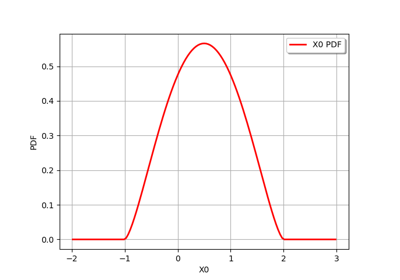
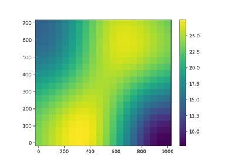

Interval¶
- class Interval(*args)¶
Numerical interval.
- Available constructors:
Interval(dim=0)
Interval(lowerBound, upperBound, finiteLowerBound=[True]*dim, finiteUpperBound=[True]*dim)
- Parameters:
- dimint,

Dimension of the interval. If only dim is mentioned, it leads to create the finite interval
![[0, 1]^{dim}]() .
By default, an empty interval is created.
.
By default, an empty interval is created.- lowerBound, upperBoundfloat or sequence of float of dimension dim
Define an interval
![[lowerBound_0, upperBound_0]\times \dots \times [lowerBound_{dim-1}, upperBound_{dim-1}]]() .
It is allowed to have
.
It is allowed to have ![lowerBound_i \geq upperBound_i]() for some
for some
 : it simply defines an empty interval.
The lowerBound and the upperBound must be of the same type. If
finiteLowerBound and finiteUpperBound are mentioned, they must be
sequences.
: it simply defines an empty interval.
The lowerBound and the upperBound must be of the same type. If
finiteLowerBound and finiteUpperBound are mentioned, they must be
sequences.- finiteLowerBoundsequence of bool of dimension dim
Flags telling for each component of the lower bound whether it is finite or not.
- finiteUpperBoundsequence of bool of dimension dim
Flags telling for each component of the upper bound whether it is finite or not.
- dimint,
Notes
The meaning of a flag is: if flag
is True, the corresponding
component of the given bound is finite and its value is given by bound
. If not, the corresponding component is infinite and its value is
either  if bound
if bound  or
or  if bound
if bound
 .
.It is possible to add or subtract two intervals and multiply an interval by a scalar.
Examples
>>> import openturns as ot >>> # A finite interval >>> print(ot.Interval([2.0, 3.0], [4.0, 5.0])) [2, 4] [3, 5] >>> # Not finite intervals >>> a = 2.0 >>> print(ot.Interval([a], [1], [True], [False])) [2, (1) +inf[ >>> print(ot.Interval([1], [a], [False], [True])) ]-inf (1), 2] >>> # Operations with intervals: >>> interval1 = ot.Interval([2.0, 3.0], [5.0, 8.0]) >>> interval2 = ot.Interval([1.0, 4.0], [6.0, 13.0]) >>> # Addition >>> print(interval1 + interval2) [3, 11] [7, 21] >>> # Subtraction >>> print(interval1 - interval2) [-4, 4] [-10, 4] >>> # Multiplication >>> print(interval1 * 3) [6, 15] [9, 24]
Methods
computeDistance(*args)Compute the Euclidean distance of a given point to the domain.
contains(*args)Check if the given point is inside of the domain.
Accessor to the object's name.
Get the dimension of the domain.
Tell for each component of the lower bound whether it is finite or not.
Tell for each component of the upper bound whether it is finite or not.
getId()Accessor to the object's id.
Get the lower bound.
getMarginal(*args)Marginal accessor.
getName()Accessor to the object's name.
Accessor to the object's shadowed id.
Get the upper bound.
Accessor to the object's visibility state.
Get the volume of the interval.
hasName()Test if the object is named.
Test if the object has a distinguishable name.
intersect(other)Get the intersection with another interval.
isEmpty()Check if the interval is empty.
Check if the interval is numerically empty.
join(other)Get the smallest interval containing both the current interval and another one.
numericallyContains(point)Check if the given point is inside of the discretization of the interval.
setFiniteLowerBound(finiteLowerBound)Tell for each component of the lower bound whether it is finite or not.
setFiniteUpperBound(finiteUpperBound)Tell for each component of the upper bound whether it is finite or not.
setLowerBound(lowerBound)Set the lower bound.
setName(name)Accessor to the object's name.
setShadowedId(id)Accessor to the object's shadowed id.
setUpperBound(upperBound)Set the upper bound.
setVisibility(visible)Accessor to the object's visibility state.
- __init__(*args)¶
- computeDistance(*args)¶
Compute the Euclidean distance of a given point to the domain.
- Parameters:
- point or samplesequence of float or 2-d sequence of float
Point or Sample with the same dimension as the current domain’s dimension.
- Returns:
- distancefloat or Sample
Euclidean distance of the point to the domain.
- contains(*args)¶
Check if the given point is inside of the domain.
- Parameters:
- point or samplesequence of float or 2-d sequence of float
Point or Sample with the same dimension as the current domain’s dimension.
- Returns:
- isInsidebool or sequence of bool
Flag telling whether the given point is inside of the domain.
- getClassName()¶
Accessor to the object’s name.
- Returns:
- class_namestr
The object class name (object.__class__.__name__).
- getDimension()¶
Get the dimension of the domain.
- Returns:
- dimint
Dimension of the domain.
- getFiniteLowerBound()¶
Tell for each component of the lower bound whether it is finite or not.
- Returns:
- flags
BoolCollection If the
 element is False, the corresponding component of
the lower bound is infinite. Otherwise, it is finite.
element is False, the corresponding component of
the lower bound is infinite. Otherwise, it is finite.
- flags
Examples
>>> import openturns as ot >>> interval = ot.Interval([2.0, 3.0], [4.0, 5.0], [True, False], [True, True]) >>> print(interval.getFiniteLowerBound()) [1,0]
- getFiniteUpperBound()¶
Tell for each component of the upper bound whether it is finite or not.
- Returns:
- flags
BoolCollection If the
element is False, the corresponding component of
the upper bound is infinite. Otherwise, it is finite.
- flags
Examples
>>> import openturns as ot >>> interval = ot.Interval([2.0, 3.0], [4.0, 5.0], [True, False], [True, True]) >>> print(interval.getFiniteUpperBound()) [1,1]
- getId()¶
Accessor to the object’s id.
- Returns:
- idint
Internal unique identifier.
- getLowerBound()¶
Get the lower bound.
- Returns:
- lowerBound
Point Value of the lower bound.
- lowerBound
Examples
>>> import openturns as ot >>> interval = ot.Interval([2.0, 3.0], [4.0, 5.0], [True, False], [True, True]) >>> print(interval.getLowerBound()) [2,3]
- getMarginal(*args)¶
Marginal accessor.
- Parameters:
- indexint or sequence of int
Index or indices of the selected components.
- Returns:
- interval
Interval The marginal interval.
- interval
- getName()¶
Accessor to the object’s name.
- Returns:
- namestr
The name of the object.
- getShadowedId()¶
Accessor to the object’s shadowed id.
- Returns:
- idint
Internal unique identifier.
- getUpperBound()¶
Get the upper bound.
- Returns:
- upperBound
Point Value of the upper bound.
- upperBound
Examples
>>> import openturns as ot >>> interval = ot.Interval([2.0, 3.0], [4.0, 5.0], [True, False], [True, True]) >>> print(interval.getUpperBound()) [4,5]
- getVisibility()¶
Accessor to the object’s visibility state.
- Returns:
- visiblebool
Visibility flag.
- getVolume()¶
Get the volume of the interval.
- Returns:
- volumefloat
Volume contained within interval bounds.
Examples
>>> import openturns as ot >>> interval = ot.Interval([2.0, 3.0], [4.0, 5.0], [True, False], [True, True]) >>> print(interval.getVolume()) 4.0
- hasName()¶
Test if the object is named.
- Returns:
- hasNamebool
True if the name is not empty.
- hasVisibleName()¶
Test if the object has a distinguishable name.
- Returns:
- hasVisibleNamebool
True if the name is not empty and not the default one.
- intersect(other)¶
Get the intersection with another interval.
- Parameters:
- otherInterval
Interval Interval of the same dimension.
- otherInterval
- Returns:
- interval
Interval An interval corresponding to the intersection of the current interval with otherInterval.
- interval
Examples
>>> import openturns as ot >>> interval1 = ot.Interval([2.0, 3.0], [5.0, 8.0]) >>> interval2 = ot.Interval([1.0, 4.0], [6.0, 13.0]) >>> print(interval1.intersect(interval2)) [2, 5] [4, 8]
- isEmpty()¶
Check if the interval is empty.
- Returns:
- isEmptybool
True if the interior of the interval is empty.
Examples
>>> import openturns as ot >>> interval = ot.Interval([1.0, 2.0], [1.0, 2.0]) >>> interval.setFiniteLowerBound([True, False]) >>> print(interval.isEmpty()) False
- isNumericallyEmpty()¶
Check if the interval is numerically empty.
- Returns:
- isEmptybool
Flag telling whether the interval is numerically empty, i.e. if its numerical volume is inferior or equal to
 (defined in the
(defined in the
ResourceMap: = Domain-SmallVolume).
Examples
>>> import openturns as ot >>> interval = ot.Interval([1.0, 2.0], [1.0, 2.0]) >>> print(interval.isNumericallyEmpty()) True
- join(other)¶
Get the smallest interval containing both the current interval and another one.
- Parameters:
- otherInterval
Interval Interval of the same dimension.
- otherInterval
- Returns:
- interval
Interval Smallest interval containing both the current interval and otherInterval.
- interval
Examples
>>> import openturns as ot >>> interval1 = ot.Interval([2.0, 3.0], [5.0, 8.0]) >>> interval2 = ot.Interval([1.0, 4.0], [6.0, 13.0]) >>> print(interval1.join(interval2)) [1, 6] [3, 13]
- numericallyContains(point)¶
Check if the given point is inside of the discretization of the interval.
- Parameters:
- pointsequence of float
Point with the same dimension as the current domain’s dimension.
- Returns:
- isInsidebool
Flag telling whether the point is inside the interval bounds, not taking into account whether bounds are finite or not.
- setFiniteLowerBound(finiteLowerBound)¶
Tell for each component of the lower bound whether it is finite or not.
- Parameters:
- flagssequence of bool
If the
element is False, the corresponding component of
the lower bound is infinite. Otherwise, it is finite.
Examples
>>> import openturns as ot >>> interval = ot.Interval(2) >>> interval.setFiniteLowerBound([True, False]) >>> print(interval) [0, 1] ]-inf (0), 1]
- setFiniteUpperBound(finiteUpperBound)¶
Tell for each component of the upper bound whether it is finite or not.
- Parameters:
- flagssequence of bool
If the
element is False, the corresponding component of
the upper bound is infinite. Otherwise, it is finite.
Examples
>>> import openturns as ot >>> interval = ot.Interval(2) >>> interval.setFiniteUpperBound([True, False]) >>> print(interval) [0, 1] [0, (1) +inf[
- setLowerBound(lowerBound)¶
Set the lower bound.
- Parameters:
- lowerBoundsequence of float
Value of the lower bound.
Examples
>>> import openturns as ot >>> interval = ot.Interval(2) >>> interval.setLowerBound([-4, -5]) >>> print(interval) [-4, 1] [-5, 1]
- setName(name)¶
Accessor to the object’s name.
- Parameters:
- namestr
The name of the object.
- setShadowedId(id)¶
Accessor to the object’s shadowed id.
- Parameters:
- idint
Internal unique identifier.
- setUpperBound(upperBound)¶
Set the upper bound.
- Parameters:
- upperBoundsequence of float
Value of the upper bound.
Examples
>>> import openturns as ot >>> interval = ot.Interval(2) >>> interval.setUpperBound([4, 5]) >>> print(interval) [0, 4] [0, 5]
- setVisibility(visible)¶
Accessor to the object’s visibility state.
- Parameters:
- visiblebool
Visibility flag.
Examples using the class¶



Overview of univariate distribution management


Create a process from random vectors and processes


Example of multi output Kriging on the fire satellite model


Kriging with an isotropic covariance function


Use the FORM algorithm in case of several design points


An illustrated example of a FORM probability estimate


Define a function with a field output: the viscous free fall example


Linear Regression with interval-censored observations